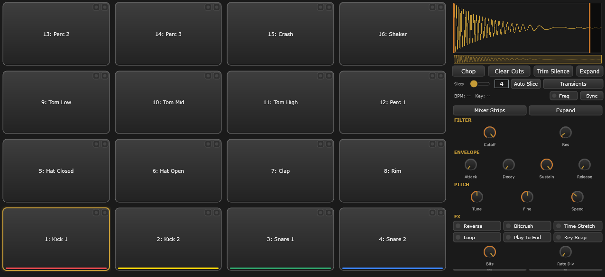
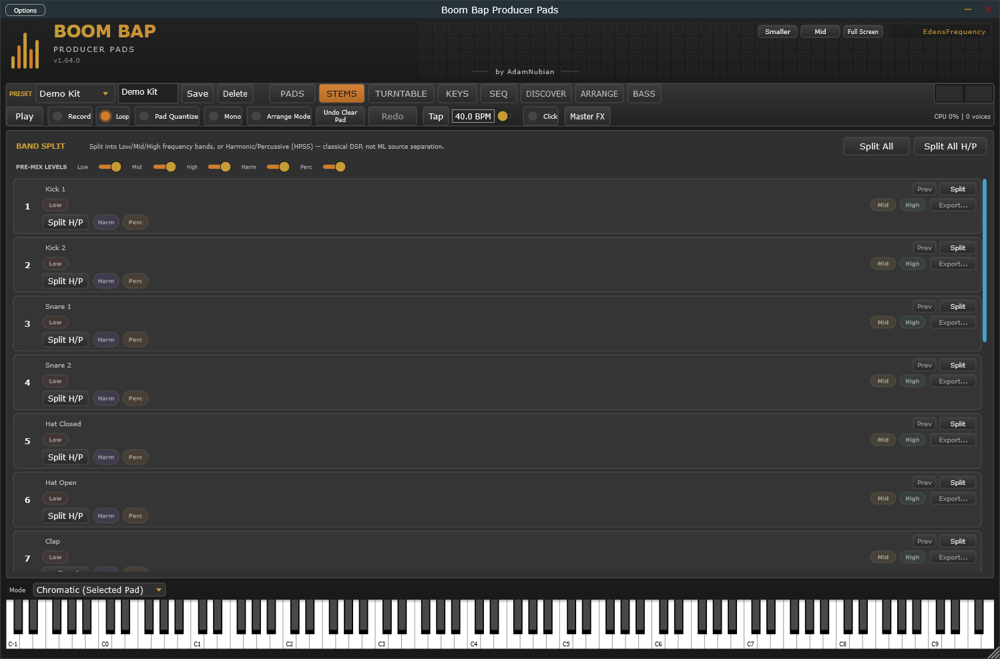
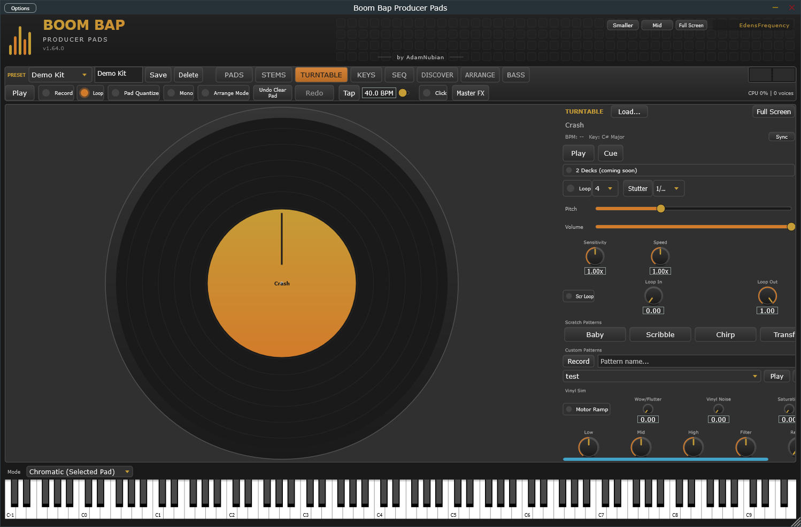
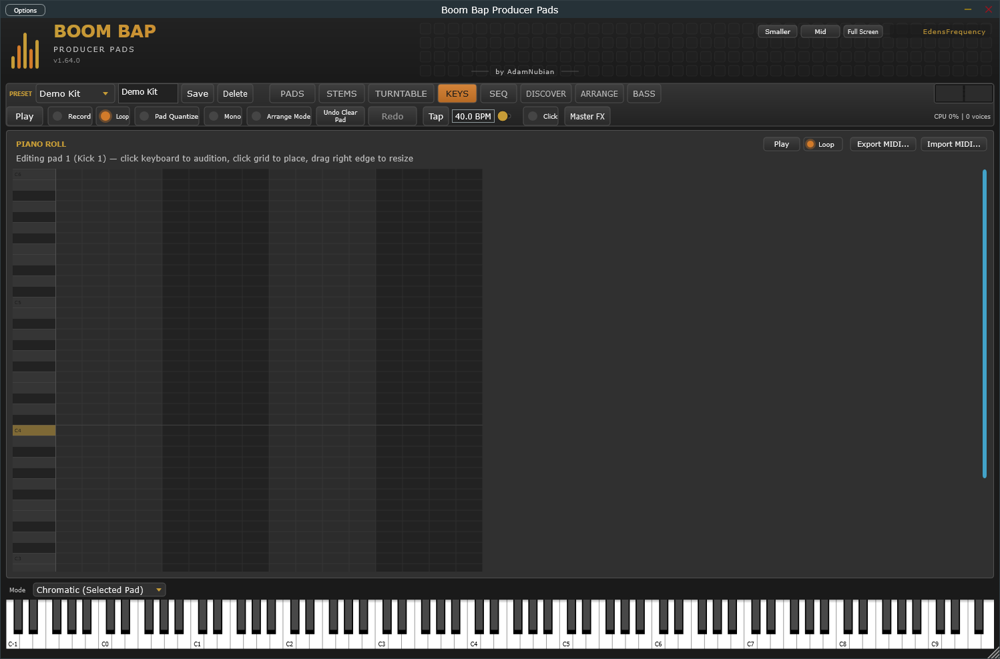
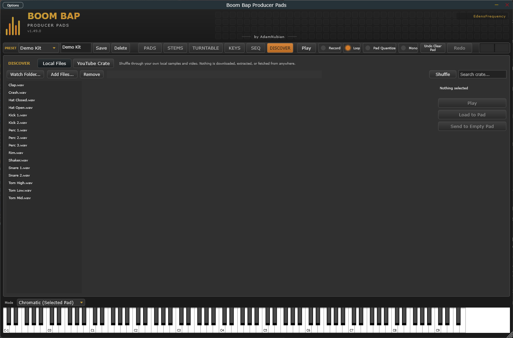

A hardware-style pad sampler and sequencer built for fast, tactile boom bap production. Chop a break, nudge the swing until it knocks, then sequence it — without opening a giant DAW just to make a beat.
EdensFrequency is building a connected set of practical creative tools around sampling, beatmaking and performance. Each product has a job. None requires you to learn a giant menu system before you can make something.
Switch modes from the toolbar while your preset bar and output meter stay in reach. The overlap with the other products is deliberate — Pads covers enough of each job to keep you working without switching tools; the dedicated products go deeper when that job becomes the main event.

16 to 64 pads a bank, sample browser, chop and slice tools, and a step sequencer with Roll for note repeat.

Split a track by frequency band, or into its harmonic and percussive parts, with pre-mix levels and live preview.

Scratch deck with Vinyl Sim and two-deck support, for working a break without leaving Pads. Producer Decks is the dedicated tool if scratching is the point.

Piano roll, on-screen keyboard and note repeat, with MIDI import and export.

Local crate browser plus a YouTube-backed reference crate. Nothing is downloaded or extracted.
Three more you don't see here: Arrangement chains banks into song sections, Bass is a dedicated voice with glide, and Mixer gives you source meters, sends, inserts and a shared reverb.
MIDI Learn on every knob and toggle
MIDI import and export
Roll and note repeat
Swing per pattern
Why I built this.
The gear money wasn't there.
I wanted a sampler that felt like hardware under my hands. Between the unit, a pair of turntables and a mixer, plus what it costs to land any of that in Southern Africa, it was never going to happen. So I built it instead.
Finding out should cost you nothing.
It's free while it's in testing, personal or commercial work, and bug reports come to me rather than into a queue. I'd rather twenty producers found the rough edges now than ship something polished that nobody uses. The source is public for the same reason.
Ready to make something?
Windows builds are available now. macOS is planned. Use the installer for the easy path or grab the release archive if you prefer to place the plugin yourself.
Windows64-bit. macOS is planned for a later phase.
Hosts testedFL Studio, Ableton Live and Reason are confirmed working. Other VST3 hosts should work, but haven’t been tested yet.
StandaloneRuns on its own — no DAW required.
WebView2The installer adds it automatically if missing. Used by the Discover tab.